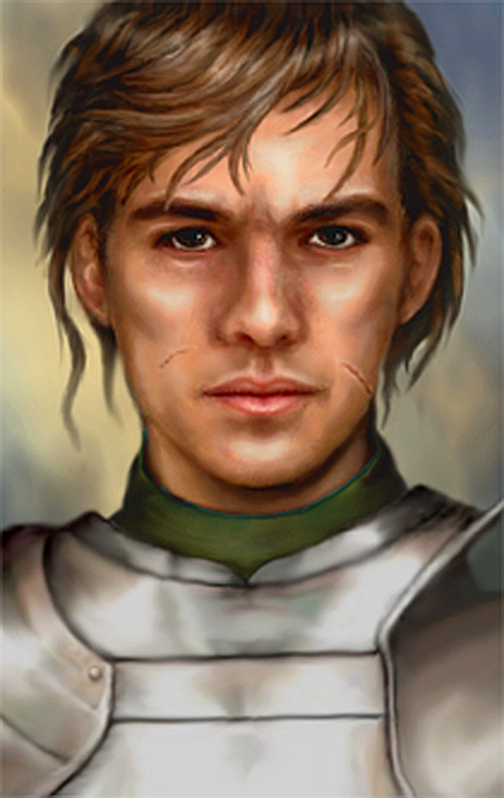
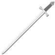
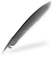
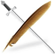
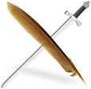

- Overview
- Compatibility
- Bug Reporting
- Installation
- Contents
- Alternate Portraits
- Story Characters
- Fun Stuff
- Contact
- Thanks
- Credits
- History
Aran Whitehand
An NPC for BG2:SoA, BG2:ToB, BG2:EE, BGT, and EET
A Gibberlings Three Mod
Author: cmorgan
On the web: Home page, discussion forum, and GitHub
Version BETA LURIDEL
Languages: English
Platforms: Windows (development)
 This is the first "real" release, but Aran has been wandering around various
installs for over a decade now. I hope you enjoy the "final" product as much as I have enjoyed writing and coding
him. Thanks to all of the members of the i.e. modding community who have contributed in lots of cool ways to this
project.
The Mod Concept
NPCs work in many different ways, based primarily on the original BioWare model. What happens, though, if we try a more
'self aware' NPC, allowing player choice for some of the fundamentals? Is an NPC's character his class and
stats, or is it really a personality? Can an NPC still be true to himself, even when a player chooses to turn them into a
new class combination? This mod explores the idea that jobs may come and go, and in the heart of an accountant may lie a
lion, even if the body doesn't quite show it off. The NPC should be able to adapt to being a new class or kit
combination, while retaining his core personality. As a side project, the intent is to post code in the forum to eventually
tie to tutorials and provide insight into the decisionmaking process when turning an idea into functional code.
Aran Whitehand is functionally a Companion mod. He has minor optional quests with a new area, but comes with no special
weapons or upgradeable items - his specialty is in interacting with the members of the party and adapting to situations.
For him, the job is paramount, and his job is supporting the player. He is no stranger to having to carry out orders which
bend morality, though he hates doing so. It should be noted that this mod is designed by adults for adults, and should not
be installed unless you are comfortable with Faerunian swearing, occasional adult themes, and NC - 17 to R rated content in
the Romance portion.
This mod is designed to work with Baldur's Gate II: Enhanced Edition or Baldur's Gate II: Shadows of Amn with or without the Throne of Bhaal expansion pack, as well as the BGT and EET conversions. The mod should be compatible with other WeiDU mods. For more information on compatibility, check out the discussion forum.
If you should encounter any bugs, please report them to the author at the Aran Whitehand forum.
Enhanced Editions Note
The Enhanced Editions are actively supported games. Please note that every patch update will wipe your current mod setup!
If in the middle of a modded game you might want to delay the patch update (if possible) as even after reinstalling the
mods, you might not be able to continue with your old savegames. Alternatively, copy the whole game's folder into a new
one that can be modded and will stay untouched by game patches. For BG:EE it is important that you install the mod to the
language version you are playing the game in. Otherwise, the dialogues of the mod will not show but give error
messages.
Windows
Aran Whitehand for Windows (aranw) is distributed as a self-extracting archive and includes a WeiDU installer. To install,
simply double-click the archive and follow the instructions on screen.
Alternatively, the files can be extracted into your game directory using 7zip or WinRAR. When properly extracted, your game directory will contain setup-aranw.exe and the folder arranw. To install, double-click setup-aranw.exe and follow the instructions on screen.
You can run setup-aranw.exe in your game folder to reinstall, uninstall or otherwise change components.
Mac OS X
Aran Whitehand (aranw) for Mac OS X *** will eventually be *** distributed as a compressed tarball and includes a WeiDU
installer.
First, extract the files from the tarball into your game directory. When properly extracted, your game directory will contain setup-aranw, setup-aranw.command, and the folder aranw. To install, double-click setup-aranw.command and follow the instructions on screen.
You can run setup-aranw.command in your game folder to reinstall, uninstall or otherwise change components.
Linux
Aran Whitehand for Linux is distributed as a compressed tarball and does not include a WeiDU installer.
Extract the contents of the mod to the folder of the game you wish to modify.
Download the latest version of WeiDU for Linux from WeiDU.org and copy WeiDU and WeInstall to /usr/bin. Following that, open a terminal, cd to your game installation directory, run tolower and answer Y to both queries. You can avoid running the second option (linux.ini) if you've already ran it once in the same directory. To save time, the archive is already tolowered, so there's no need to run the first option (lowercasing file names) either if you've extracted only this mod since the last time you lowercased file names. If you're unsure, running tolower and choosing both options is the safe bet.
To install, run WeInstall amber in your game folder. Then run wine BGMain.exe and start playing.
Note for Complete Uninstallation
In addition to the methods above for removing individual components, you can completely uninstall the mod using setup-aranw
--uninstall at the command line to remove all components without wading through prompts. .
The Companion NPC
Aran Whitehand is a human fighter and scribe for BG2, dual classable, so that he can be Tinker, Tailor, Soldier, Spy... whatever your party needs. Basically, a human utility player taken along for the friendship/cuddling. "Specials" include creation of scrolls through dialog and timer when in a party with another canonical mage. Primarily a male friend who can grow into an extended courtship/romance, romanceable by female PCs, Aran has his own sense of humor and specializes in bringing others into the conversation.
Statistics
"Warrior" configuration [DEFAULT] [player options on install, fighter]
 17
Strength
16 Dexterity
15 Constitution
12 Intelligence
13 Wisdom
12 Charisma
"Poet" configuration [player options on install, for Cleric dual class]
 16
Strength
13 Dexterity
15 Constitution
12 Intelligence
17 Wisdom
12 Charisma
"Thinker" configuration [player options on install, for Mage dual class]
 16
Strength
13 Dexterity
15 Constitution
17 Intelligence
12 Wisdom
12 Charisma
"Survivor" configuration [player options on install, for Thief dual class]
 16
Strength
17 Dexterity
15 Constitution
13 Intelligence
12 Wisdom
12 Charisma
Friendship
Aran will befriend any protagonist of any race or alignment,though how he reacts to situations will definitely let the player know how he feels. A rough - around - the - edges man, accustomed to mercenary sevice and caravan work both in front of and protecting the books, Aran hires on as a scribe or accountant as well as protection. He has learned to work with practically anyone not Drow, and chase any female within arms reach. His language is rough, his approach unrefined. And if you don't like it, he will gladly tell you exactly what your opinion is worth.
Romance
Aran will romance any female protagonist of any race save Drow, or any alignment. Again, how he reacts will definitely let the player understand his position. Good men fall for bad women as quickly as for good ones, and sometimes opposites really do attract. But romance on the trail is awkward, with a group of adventurers around, and the road to romance is both rocky and complicated. Exactly how does a strong man feel when his significant other turns out to be infinitely stronger than he, on so many levels? Can the two of you negotiate the attraction into something of an equal relationship, or is this destined to fail? For a sample of lovetalks, please visit the forums.
WARNING. FEMALE PC ROMANCE CAN BE "NOT SAFE FOR WORK".
Although your female PC has many opportunities to manage the physical side of the relationship and can always shut him down or start him up, if a female player character romances him there is specific, detailed, graphic, poorly written fanfic smut that will make for a workplace conversation that you DO NOT want to have. If you have played Romantic Encounters for BG2, Sheri and Renal are relatively tame by comparison. YOU HAVE BEEN WARNED. (If you don't want it at all, play him with a male PC, and all will be completely fine.)
Joining the Party
When Aran Whitehand meets the party, he is looking for work having dropped from the rolls of a mercenary regiment. Look for him in the new inn "The Broken Sword", found on the Promenade just North of the Adventurer's Mart and just West of the Circus Tents. The bouncer's name is Manson.
BETA USERS PLEASE NOTE: Aran's starting location is patched into the Promenade. Currently the code does not parse saved games to edit in his area; to get him, you need to start a new game or proceed from a save anywhere before first arriving on the Promenade (I often test from the initial dungeon saves).
Customization
In addition to setting Aran up as one four potential dual-class options, there are components to change his content
timers, and his portrait in-game. You will be asked about those potential choices on install, but they are completely
optional - his default install parameters are as follows: *****INSERT DEFAULT STUFF INFORMATION HERE LATER CMORGAN WAKE UP
AND DO THIS BEFORE RELEASE.
Before your installation proceeds, you might want to take a look at your options under portraits shown below.
Portrait choices currently available are in this document here, or online in this gallery here.
- The "PiD", or "Player Initiated Dialogue" where you initiate conversation directly with Aran in-game, is your friend. You can do all sorts of things, including rewrite history. If you correct him, he will happily believe what you tell him is the absolute and gospel truth - and set his variables accordingly. (Don't you wish people were like that?)
- Hang around the Broken Sword for awhile, and you'll find table chatter. The non-joinable NPCs there have some conversations, too. Look for additional content there in later releases.
- Kick him out and take him back in in different ways, in different areas.
- Have a sparring session with him, friend or not, romance or not. All are different, and take advantage of RandomNumber generation, so... expect things to be different every playthrough.
- Ask him for advice in different areas.
- Get him drunk. Several times.
- Charm him, and chat...
- Romance: Play an evil female PC and treat him badly... scratch him, bite him, and see what he does.
- Romance: Get into an argument with him, and when he comes looking to make up, refuse. Or you could try apologising. Sometimes he actually accepts. Sometimes he apologises. Sometimes he is an ignorant prat and holds a grudge...
- Romance: The naughty bits are rather varied and exhaustive. Or at least they try to be. Encourage him, don't encourage him, make him work for it... play it however you like.
- Install Crossmod Banter Pack after all other NPC mods and some other mods like Divine Remix, and he will banter with mod added NPCs.
- Like their authors Berelinde and cmorgan, Gavin and Aran have a good friendship. As a result, there is more content, noth friendship and romance, between the two. Install Gavin before Aran, and you will have more content between the two of them.
- Play him on BGII:EE/EET. He has content and banters with the BeamHaul crowd, too.
This mod was created by cmorgan. You can visit The Gibberlings Three for information on this and any other mods on which the community may be working.
The current list of folks who have contributed and I wish to thank is on Aran's forum... or it will be once I have gotten that organized
There is an entire community of folks to thank, for all sorts of reasons, so someone is going to get left out and I am going to be very embarrassed. But the folks who really make things fun when working through i.e. stuff, the folks who assisted in proofreading, giving critical feedback, and sending those PMs and messages saying "YES!" or "NOOOOO!!!!!!" are all part of this mod. The good parts. The bad parts are all mine.
First off, Domi is a goddess whose work with Dynaheir in BG1NPC originally inspired me to get off of my lazy behind and actually become involved in modding. I thank her, curse her, swear at her, and then swear by her, all usually within the same 20 minutes. Thanks to CamDawg, Grim Squeaker, Smoketest, devSin, Wisp, Taimon, Ascension64, igi, eric, Steve, and Miloch, who all show me how things work and manage not to call me an ignorant jackass to my face (mostly). And infinite thanks to Nythrun, who showed me patience, great humor, and the power of "just do it."
And though he will make an obscene comment or involve Aran in a Dodecahedron Smut Mod in retaliation, special thanks to "the bigg". Not just for years of patience and help, but for huge work behind the scenes to support, clean up, extend, and rebuild Weimer's Dialog Utility making it relevant and powerful for today's modders.
On this specific project, huge thanks go to Berelinde, who has helped me bounce ideas, clean up/rebuild code, warned me when I was getting really gross, poked at me when I slacked, asked the "duh" questions that have set me on new paths, reminded me when I have started doing boneheaded things in code, and provided solid criticism. Jastey has been there regularly, giving great specific feedback; without these two strong modders as friends, working on and discussing things at Tolkein Across The Water, the biggest challenges in the mod would never have been attempted, let alone written. To the Two Mistresses of Modding Mayhem, I tip my cap in appreciation, and let you know that you have helped me get hours of enjoyment out of the modding challenge. It is great to work with you!
Special thanks to Peachplums for her donated artwork - check her out at http://peachplums.deviantart.com/ and follow her work!
Lots of people have helped out in this "open code" mod experiment, many with behind-the-scenes PMs that have opened new ideas or closed up old ones, others with clear and helpful bug and typo hunting, and still others with the ticklish and sensitive "proofread the smut" quotient. My appreciation is fierce. In most cases, my thanks has been to write specific pathways or open branches in response to their own particular personal protagonist preference (their "ppp"), but some angels have given feedback without indicating what they like in their ppp, so the only coin I have in repayent is acknowledgement of contribution. A partial list follows:
- Amellg
- PeachPlums
- RavenBlack
- Ipsy
- Nix
- KIrving
- Ajnos
- KathStoneDog
- McMazey
- Jessception
- Aeryn
- Luridel
- Ardanis
- Miloch
- Wisp
- devSin
- the bigg
- K'aeloree
- Marla Wolfblade
- erik
- Igneous
- Kessi
- yarpen
- Autumn Bard
- Ericp07
- Mike1072
- igi
- Nythrun
- Shaitan
- plainab
- Domi
- Miloch
- NOTE TO SELF: RECHECK PMS AND POSTS FOR CONTRIBUTORS!!! And for folks who would rather remain anonymous.
This project has been a blast, even on days when I just wanted to throw it all in and go whack something in Mount & Blade or take over the world in Civ III/IV/BTS/V/GK/VI/VI:Rise and Fall (the project took that long!!). That is entirely due to folks poking at Aran with long sticks, asking questions, giving feedback, and making me rethink things.
Tools and Resources Used in Creation
- WeiDU by Wes Weimer and the bigg and Wisp
- WinMerge GNU freeware file comparison utility, developed: Grim; Project Lead: List
- jEdit Programmer's Text Editor by an entire world of open-source developers
- ConTEXT by Eden Kirin
- TextPAD purchased version 5 by Helios Software Solutions
- WildEdit purchased version 1.1 by Helios Software Solutions
- Crimson Editor by Ingyu Kang
- DLTCEP by Avenger
- IESDP maintained by igi and Avenger
- Near Infinity by Jon Olav Hauglid, FredSRichardson, devSin, and Wisp
- Shadowkeeper by Mud-Master
- WeiDU jEdit Highlighters by cmorgan
- WeiDU ConTEXT Highlighters by Idobek, updated by cmorgan
- WeiDU Crimson Editor Highlighters by cmorgan
- WeiDU TextWrangler Highlighters by cmorgan
- WeiDU NotePad++ Highlighters by mike 1072 and cmorgan << OLD - use Argent77's...
- Argent77's NotePadPlusPlus WeiDU Highlighters, by Argent77
-
ZOOM H4next Handy Portable Digital Audio recording device
- Audacity free, open source, cross-platform software for recording and editing sounds
- Tile2EE, A MOS and TIS converter by argent77
Musical Themes Used
JSayles Early Music - "All MP3 recordings listed below, may be downloaded and distributed free of charge. The recordings may be used for any purpose whatsoever. In fact, that's the only reason I'm doing this to promote Early Music, and especially to promote the musical selections recorded below." - J. Sayles, performer
- aranw/media/wavc/set2_1_orosetta.wav /* 1 friend, upbeat */
- aranw/media/wavc/set2_2_praetorius.wav /* 2 friend, introspective */
- aranw/media/wavc/set2_3_sweetnymphcometothylover.wav /* 3 love, upbeat */
- aranw/media/wavc/set2_4_aprilinmistressface.wav /* 4 love, introspective */
- aranw/media/wavc/set2_5_riuriuchiu.wav /* 5 drunk or in an inn, fast */
- aranw/media/wavc/set2_6_comeagain.wav /* 6 inn, introspective */
Vox Vulgaris - middle ages with a twist. Source - The group. Selections clipped from three of their online materials, Cantiga 166, Rokatanc, and Saltarello. Pieces are in public domain, but the performance is copyrighted - probably shorter than the "you are stealing this" time index, but if an official someone objects for use in a free mod, I'll just use it on my own install. I have to thank the husband and wife team that developed mount & Blade, because I didn't know there was such great midaevil re-covers from groups like Vox Vulgaris and Hungary Debrecen, until modders put them into their M&B mods!
- aranw/media/wavc/set3_1_vox_vulgaris_rokatanc.wav /* 1 friend, upbeat */
- aranw/media/wavc/set3_2_vox_vulgaris_rokatanc.wav /* 2 friend, introspective */
- aranw/media/wavc/set3_3_vox_vulgaris_cantiga_166.wav /* 3 love, upbeat */
- aranw/media/wavc/set3_3_vox_vulgaris_cantiga_166.wav /* 4 love, introspective */
- aranw/media/wavc/set2_5_riuriuchiu.wav /* 5 drunk or in an inn, fast */
- aranw/media/wavc/set3_6_vox_vulgaris_saltarello.wav /* 6 inn, introspective */
Brass ensemble, Suzato, The Danseyre. Renaissance, done in a brass arrangement. Czech Brass. Source - Czech Brass album "Virtuosi Baroque Music", on the Sonnleitner Verlag label. Copyrighted, so if someone objects to the rip for a free mod, I'll take it out. But if you find one of their recordings, they are solid brass, more calm in their interpretations that the Philip Jones Brass Ensemble or Canadian Brass.
- aranw/media/wavc/set1_1_suzato_danserye_mourisque.wav /* 1 friend, upbeat */
- aranw/media/wavc/set1_2_suzato_danserye_battaille.wav /* 2 friend, introspective */
- aranw/media/wavc/set1_3_suzato_danserye_bransle.wav /* 3 love, upbeat */
- aranw/media/wavc/set1_4_suzato_danserye_monamy.wav /* 4 love, introspective */
- aranw/media/wavc/set1_5_praetorius_volte.wav /* 5 drunk or in an inn, fast */
- aranw/media/wavc/set2_6_comeagain.wav /* 6 inn, introspective */
Author:
Copyright and Distribution:
This mod is not developed, supported, or endorsed by BioWare" BeamDog", Overhaul", or
Interplay/BlackIsle".
It is currently licensed under the "G3RA" licence, to wit -
Gibberling3 Rules All (like Tiax, only on the web).
The website Gibberling3 and its owner of record is my sole distributor of this mod. In my absence, any Gibberling from G3
has my complete trust and authority to change anything and all things to match current G3 beliefs. This includes changing
my license to an established legal one, changing the distribution package, editing and removing and expanding and revising
any and all code and/or content, establishing approved and authorized mirrors and backups, and porting any content into new
game platforms. For all intents and purposes, any Gibberling is functionally Me In Person (and if they guess wrong and I
disagree with something we will fight it out in private and fix it later). We are a team, and I believe in them fully and
without reservation, period, full stop.
Mod authors wishing to create crossmod components collaboratively are welcome to contact me. Authors who would like to create crossmod content in my absence are hereby given permission to do so, with the caveat that any Gibberling can exercise creative control and editing over the content given to the Crossmod Banter Pack up to and including denying permission if the writing's quality or tone are deemed insufficient by them.
Personal Note:
If you are a reasonable person who values your own original work, please think before using other folk's stuff in your
own mod. Yes - we modify published game code and content - but doing that to other modders work is a crappy thing to do. No
matter how much you want the mods to be part of your game experience, the only "payment" a modder gets is players
commenting on their work. Their work, not your redefinition of it. The community can work cooperatively on content, and you
can always build your own mods on top of an install without taking over other people's NPCs and Quests. Please think,
and remember that however fiercely you want to tell your own story to the world, the other modders felt the same way. They
refrained from messing about with your stuff. Please do the same for theirs.
beta_luridel (06.30.2015)
beta_maidenshadow (06.25.2015)
beta_ravenblack (11.09.2011)
beta_piperb (10.28.2011)
Pre-2011 Development and Concept Builds
- Lots of smaller independent builds built for playtesters, long since lost in the mists of ancient history and the glittery decay of spinning magnetic discs meeting their inevitable slide into oblivion.